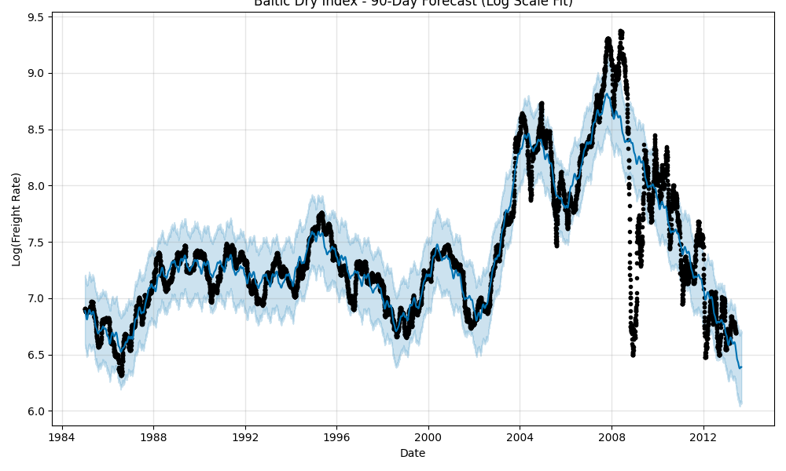

SIH 2026/Overview
Model workspace
SI
SMART VESSEL & FREIGHT PLANNING
Turn vessel data into better decisions.
A decision-support dashboard for vessel selection, port feasibility and freight-rate intelligence.
⚓
PORTRATEVESSELMARKET SIGNAL
HistoricalBaltic Dry Index
Source: bdi_clean.csvCleaned daily series
DECISION FLOW
How the engine works
01Route constraintsDraft, LOA, beam & cargo
02Feasible vesselsFilter by vessel specs
03Rate intelligenceForecast vessel-adjusted rates
04Timing windowRank the lowest-cost 7-day window
VESSEL ADVISOR
Find the best-fit vessel.
Use the same feasibility constraints implemented in the repository's vessel simulator.
ROUTE INPUT
Voyage parameters
Feasibility uses the minimum draft of origin and destination, then checks vessel DWT capacity.
Your recommendation will appear here
Enter a route and cargo requirement, then run the decision engine.
RATE FORECAST
Market outlook.
The repository's Prophet pipeline models vessel-adjusted BDI rates using a log transform.
MODEL OUTPUT
Panamax · 90 daysForecast artifact

Run
python forecasting.py to regenerate the repository forecast artifact.Prophet + vessel multipliers
The forecasting module fits Prophet on log-transformed BDI data and applies approximate vessel multipliers before converting predictions back to rate space.
Capesize1.50×
Panamax1.00×
Supramax0.80×
Handysize0.60×
PORT NETWORK
Route constraints at a glance.
Port attributes currently available in port_data.py.
| Port | Country | Type | Max draft | Max LOA | Max beam | Handling rate | Source |
|---|
SYSTEM ARCHITECTURE
Built for explainable decisions.
A clear chain from route constraints to an actionable recommendation.
Data layer
Cleaned BDI history plus structured port constraints form the decision inputs.
bdi_clean.csvdummy_port_data.csvForecasting
Prophet models the market signal independently for each vessel class through scaling multipliers.
forecasting.pyRecommendation
Route feasibility filters vessel classes, then rate forecasts are ranked across the contract period.
Vessel_simulator.pyDecision UI
This dashboard makes the inputs, constraints and outputs easy to inspect during an SIH demo.
dashboard.html